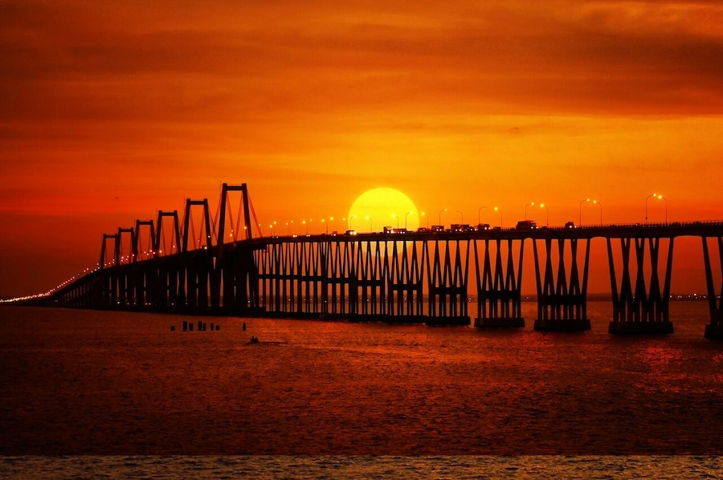

My favorite city is Maracaibo, Venezuela. "The Land of the Beloved Sun," as a bagpipe says, "This is the most beautiful city on the continent; it has a lake, China and a bridge; bagpipes and hospitality; it has the warmth and the highest quality people."
